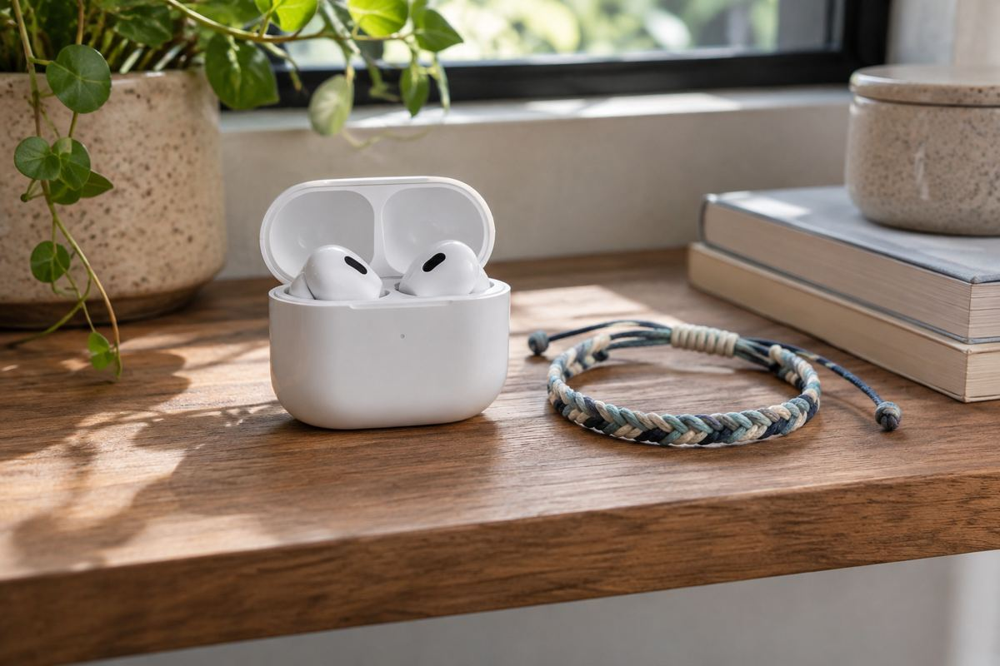

오디오·한정판 / EXPLAINED
Galaxy Buds4 Pro 독일 한정판, 추가 구성품과 오디오 기능은 따로 보기
11월 6일 2000개 한정 번들을 발표했다. 일반형과 같은 249유로지만 고음질 기능에는 호환 기기 조건이 있다.

삼성전자 독일 법인이 가수 Nina Chuba와 협업한 Galaxy Buds4 Pro 한정 번들을 11월 6일 발표하고 같은 날 판매를 안내했다. 물량은 2000개이며 독일 Amazon을 통해 일반 Galaxy Buds4 Pro와 같은 249유로에 제공한다고 밝혔다. 새 오디오 모델의 출시라기보다 기존 이어폰에 전용 케이스와 액세서리를 더한 지역 한정 구성이다. 한국에서 같은 가격과 조건으로 판매한다는 공지는 아니다.
무엇이 추가되고 무엇이 유지되나
구성에는 흰색 Buds4 Pro, 협업 디자인 케이스, 다섯 개 장식이 달린 꼰 팔찌가 포함된다. Nina Chuba는 독일의 가수로, 장식들은 곡에서 아이디어를 얻었다고 회사는 설명했다. 이어폰을 음악 재생 장치와 패션 소품 양쪽으로 보여주는 상품이다. 다만 포장과 부속품의 차이가 곧 새로운 음향 하드웨어의 개발을 뜻하지는 않는다. 이번 자료는 협업판만의 드라이버나 음질 개선 수치를 별도로 제시하지 않았다. 일반형과 비교한다면 먼저 이어폰 본체와 추가 구성품을 나눠 봐야 한다.
회사는 Buds4 Pro의 최대 24비트·96kHz 고음질 기능도 소개했다. 비트 수는 디지털 오디오 신호의 값을 표현하는 정밀도와, 샘플링 주파수는 1초에 신호를 표본으로 읽는 횟수와 관계한다. 그러나 표기 숫자만으로 모든 음악과 모든 휴대전화에서 체감 음질이 같다고 할 수는 없다. 원본 콘텐츠와 연결 방식, 설정, 착용 상태 등이 함께 영향을 준다. 특히 한정판에 이 숫자가 적혀 있다는 사실을 일반형보다 더 높은 품질이라고 읽을 근거는 없다. 공개 수치는 기반 제품의 기능 설명이다.
호환성과 기본 설정의 차이
공식 각주는 고음질 기능이 지정된 Galaxy 스마트폰·태블릿과 소프트웨어 조건에서 작동한다고 설명한다. 기본적으로 꺼져 있어 설정에서 활성화해야 한다는 안내도 있다. 따라서 지원 제품을 가지고 있어도 처음 연결한 순간 모든 기능이 자동 적용된다고 볼 수 없다. 제품 이름만 확인하는 대신 정확한 모델과 One UI 버전, 관련 설정을 살펴봐야 한다. 다른 브랜드의 휴대전화와 연결할 때에는 기본 재생과 특정 고급 기능의 지원 범위가 다를 수 있다는 점도 구분할 필요가 있다.
머리 동작으로 통화를 받는 기능과 호환 Galaxy의 통역 기능 역시 소개됐다. 이것은 이어폰 자체가 모든 언어와 앱에서 독립적으로 통역한다는 뜻이 아니다. 연동 기기와 지역, 소프트웨어의 세부 조건을 따라야 한다. 이번 글은 공개 기능의 범위를 정리한 것으로 실제 통화 품질이나 번역 정확도를 시험하지 않았다. 구매자는 자신이 사용할 전화와 원하는 기능이 맞는지 확인한 뒤, 협업 디자인에 별도 가치를 두는지 판단할 수 있다. 다른 사람의 취향과 자신의 기능 요구는 같지 않다.
한정 2000개라는 숫자는 발표된 공급 범위이지 향후 중고가격이나 재판매 수익을 보장하는 수치가 아니다. 실제 재고와 배송 가능 지역, 반품·보증 조건은 판매처에서 확인해야 한다. 특히 해외 구매에서는 표시가격을 환율로 바꾼 값만으로 최종 비용을 판단하기 어렵다. 이번 소식의 핵심은 정규 제품의 기능 위에 문화 협업과 구성품을 얹는 판매 방식이다. 음질을 위해 고르는 제품인지, 디자인과 기념품을 함께 원하는 구매인지 나눠 보면 한정판이라는 말에 가려진 비교 기준이 드러난다.